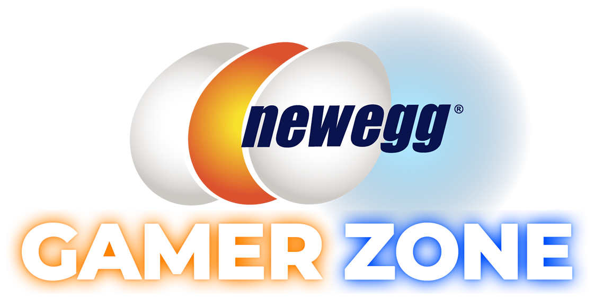

Monthly calendar

Monthly Calendar: October 2026
Special Events
OCT 3: Fantastech 2 Party
Fantastech 2 is one of Newegg's biggest annual shopping events for PC parts, peripherals, and more! We're celebrating the sale with monitor/keyboard raffles, free play, and free pizza lunch!
OCT 10: Closed for Private Event
OCT 16: Closed for Private Event
OCT 17: Closed for Private Event
OCT 24: THE ULTIMATE CAR & SIM RACING EXPERIENCE
In collaboration with Malibu Autobahn, Likewize, and Apevie, The Ultimate Car & Sim Racing Experience features luxury cars, exclusive giveaways, and hydraulic racing simulators!
OCT 31: Halloween Costume Party
Bring your best costume! Enjoy candy, scary games, and costume contests!